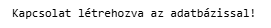
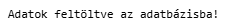
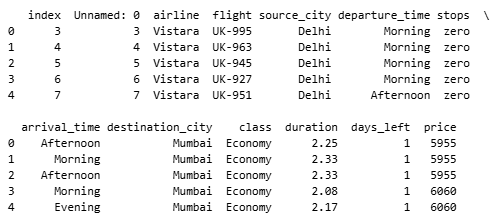
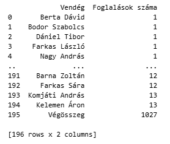
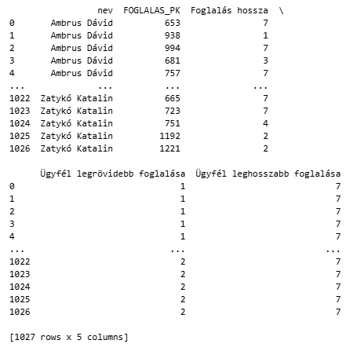
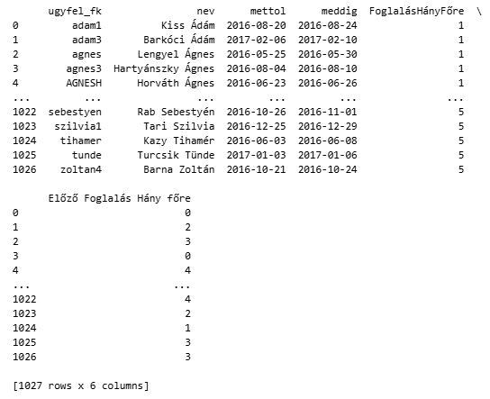
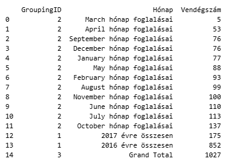
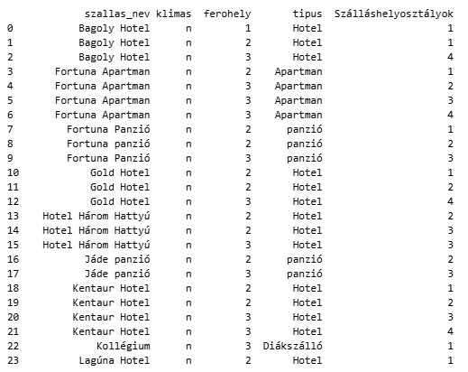

Connecting SQL Server and pandas
Python-based workflow for database connection, table upload, SQL querying, and analytical result handling with pandas.
Overview
This project focuses on connecting Python and SQL Server through pandas and SQLAlchemy. The main objective was to show how a Python workflow can establish a secure database connection, upload cleaned tabular data into SQL Server, execute SQL queries directly from Python, and load the results back into pandas DataFrames for further inspection and analysis.
Unlike the other T-SQL pages, this project is not centered only on SQL syntax. Instead, it demonstrates how SQL querying can be integrated into a Python-based analytics workflow, which is especially useful in data analysis, data engineering, and reporting scenarios.
Project Goal
The goal of this file was to demonstrate that database work does not need to stay isolated inside SQL Server Management Studio. Using pandas, SQL queries can become part of a broader Python workflow where data is loaded, transformed, queried, and reused in one environment.
Database Connection
Create a reusable connection from Python to SQL Server using environment variables and SQLAlchemy.
Data Upload
Load cleaned CSV data into a SQL table directly from pandas with to_sql().
Query Execution
Run SQL statements from Python and collect the results into DataFrames.
Analysis Workflow
Combine SQL logic and pandas inspection in a single reproducible analysis process.
Workflow Structure
The script follows a simple but realistic workflow: connect to the database, test the connection, upload a cleaned dataset, read the uploaded table back, and then execute multiple analytical queries on another SQL Server database.
.env Configuration → SQLAlchemy Engine → Connection Test → CSV Load with pandas → Upload to SQL Server → Run SQL Queries → Load Results into DataFrames
Connection Setup
The first step is establishing the connection between Python and SQL Server. The script uses environment variables stored in a .env file, which is a more secure and reusable approach than hardcoding credentials directly into the source code.
from sqlalchemy import create_engine, text
import pandas as pd
import os
from dotenv import find_dotenv, load_dotenv
dotenv_path = find_dotenv()
load_dotenv(dotenv_path)
USER = os.getenv("USER")
PASSWORD = os.getenv("PASSWORD")
LOCALHOST = os.getenv("LOCALHOST")
DATABASE = os.getenv("DATABASE")
DRIVER = os.getenv("DRIVER")
engine = create_engine(
f"mssql+pyodbc://{USER}:{PASSWORD}@{LOCALHOST}/{DATABASE}?driver={DRIVER}"
)
print("Kapcsolat létrehozva az adatbázissal!")
This section demonstrates a practical Python-to-database integration pattern that is directly relevant in real-world analytics projects.
Connection Validation
Before running any upload or query logic, the script verifies that the connection works correctly by requesting the SQL Server version. This is a useful diagnostic step because it confirms that the engine is valid and the database is reachable.
with engine.connect() as connection:
result = connection.execute(text("SELECT @@VERSION"))
for row in result:
print(row)

Uploading Data from pandas to SQL Server
One of the key purposes of the script is to demonstrate that a cleaned CSV file can be loaded into a pandas DataFrame and then uploaded into SQL Server as a real database table.
df = pd.read_csv(
r'C:\Users\Évi\OneDrive\Asztali gép\Portfoliio project\Data Science Folder Template (jelszólevédés)\project-name\data\raw\Clean_Dataset.csv',
delimiter=','
)
tablename = 'flight_clean_table'
df.to_sql(tablename, engine, if_exists='replace', index=True)
print("Adatok feltöltve az adatbázisba!")

This part is especially useful because it shows the bridge between file-based preprocessing and relational database storage.
Reading Data Back into pandas
After uploading the table, the script reads it back from SQL Server using pandas. This confirms that the upload succeeded and that the data can immediately be reused inside Python.
This demonstrates a full round trip: file → DataFrame → SQL table → query result → DataFrame.
tablename = 'flight_clean_table'
sql_df = pd.read_sql(tablename, engine)
sql_df.head()
df_query = pd.read_sql_query(
"SELECT * FROM flight_clean_table WHERE airline = 'Vistara'",
engine
)
print(df_query.head())

Running SQL Queries from Python
The second half of the script focuses on analytical SQL queries executed from Python against a hotel-style SQL Server database. The results are loaded into pandas DataFrames, which makes them easy to inspect, export, or visualize later.
Table Retrieval
Read full SQL tables into pandas one by one for inspection and validation.
Grouped Reports
Execute grouped SQL reports and subtotal logic directly from Python.
Window Functions
Use ranking, lag, and partition-based SQL logic, then inspect the output in DataFrames.
Reusable Results
Store SQL query outputs as DataFrames for downstream processing in Python.
Representative Query Examples
The script includes many SQL queries, but these examples best represent the integration value of the project. They show grouped summaries, window functions, and practical reporting tasks executed through pandas.
Example 1 — Total Bookings per Guest
This query counts how many bookings each guest has in total, including the grand total row. It shows that even more advanced SQL grouping logic can be executed directly from Python and returned as a DataFrame.
df_query = pd.read_sql_query('''
select iif(Grouping_ID(vendeg.nev)=1,'Végösszeg', cast(vendeg.nev as nvarchar(20))) as 'Vendég',
count(Foglalas.FOGLALAS_PK) as 'Foglalások száma'
from Vendeg join Foglalas on Vendeg.USERNEV = Foglalas.UGYFEL_FK
group by rollup(vendeg.nev)
order by 'Foglalások száma';
''', engine)
print(df_query)

Example 2 — Shortest and Longest Booking per Guest
This query combines relational joins with window functions to show the length of each booking, together with the shortest and longest stay for the same guest.
df_query = pd.read_sql_query('''
select vendeg.nev,
Foglalas.FOGLALAS_PK,
DATEDIFF(DAY, foglalas.mettol, foglalas.meddig) AS 'Foglalás hossza',
min(datediff(day, foglalas.mettol, foglalas.meddig)) over(partition by foglalas.ugyfel_fk) as 'Ügyfél legrövidebb foglalása',
max(datediff(day, foglalas.mettol, foglalas.meddig)) over(partition by foglalas.ugyfel_fk) as 'Ügyfél leghosszabb foglalása'
from foglalas
join vendeg on foglalas.ugyfel_fk = vendeg.usernev
order by vendeg.nev, foglalas.mettol;
''', engine)
print(df_query)

Example 3 — Previous Booking Size with LAG()
This example uses the LAG() window function to compare each booking with the previous booking of the same guest. It is a strong example because it shows how analytical SQL logic can be applied and then handled directly in pandas.
df_query = pd.read_sql_query('''
select f.ugyfel_fk,
v.nev,
f.mettol,
f.meddig,
(f.felnott_szam + f.gyermek_szam) as 'FoglalásHányFőre',
lag(f.felnott_szam + f.gyermek_szam,1,0)
over(partition by f.ugyfel_fk order by f.foglalas_pk) as 'Előző Foglalás Hány főre'
from vendeg v
join foglalas f on v.usernev = f.ugyfel_fk
order by 'FoglalásHányFőre';
''', engine)
print(df_query)

Example 4 — Yearly and Monthly Guest Counts with Subtotals
This query groups bookings by year and month, and includes subtotal and total rows. It shows that grouped reporting logic from T-SQL can be embedded in a Python analysis workflow without modification.
df_query = pd.read_sql_query('''
SELECT
GROUPING_ID(YEAR(foglalas.mettol), MONTH(foglalas.mettol)) AS 'GroupingID',
CASE
GROUPING_ID(YEAR(foglalas.mettol), MONTH(foglalas.mettol))
WHEN 0 THEN CAST(MONTH(foglalas.mettol) AS nvarchar(4))
WHEN 1 THEN CONCAT(YEAR(foglalas.mettol), ' évre összesen')
WHEN 2 THEN DATENAME(MONTH, DATEADD(MONTH, month(foglalas.mettol) - 1, '2000-01-01')) + ' hónap foglalásai'
WHEN 3 THEN 'Grand Total'
END AS 'Hónap',
COUNT(*) AS 'Vendégszám'
FROM Foglalas
JOIN vendeg ON foglalas.ugyfel_fk = vendeg.usernev
GROUP BY CUBE(YEAR(foglalas.mettol), MONTH(foglalas.mettol))
HAVING GROUPING_ID(YEAR(foglalas.mettol), MONTH(foglalas.mettol)) >= 1
ORDER BY COUNT(*);
''', engine)
print(df_query)

Example 5 — Accommodation Classification with NTILE()
This example classifies accommodation records into four groups based on capacity and type, using the NTILE() function. It demonstrates that the script is not limited to simple data retrieval, but also includes ranking and segmentation logic.
df_query = pd.read_sql_query('''
select distinct szallas_nev,
klimas,
ferohely,
tipus,
NTILE(4) over(partition by tipus order by szoba.ferohely) 'Szálláshelyosztályok'
from szoba
join szallashely on szallas_id = szallas_fk
where klimas = 'n';
''', engine)
print(df_query)

Why This Project Matters
It Connects SQL and Python
The project demonstrates how SQL Server querying can become part of a Python-based data workflow.
It Supports Reproducible Analysis
Data loading, querying, and result retrieval happen in one script, which makes the process easier to repeat.
It Reflects Real Analytics Practice
In real-world work, analysts often need both SQL for extraction and pandas for further processing.
It Extends Database Use Cases
The database is not only queried manually, but programmatically integrated into a broader data pipeline.
Key Takeaways
- This project demonstrates practical SQL Server integration from Python. It goes beyond isolated SQL scripts.
- pandas and SQLAlchemy create an efficient bridge between files, databases, and analysis code.
- The workflow supports both upload and retrieval. Data can move into SQL Server and back into DataFrames in the same script.
- Analytical SQL remains fully usable inside Python. Grouping, window functions, and ranking logic can all be embedded in pandas workflows.
- This is especially relevant for data analyst and data engineering work. It reflects a realistic integration pattern between SQL and Python tooling.
Navigation
This page is part of the T-SQL portfolio section and presents Python-based database interaction with pandas and SQL Server.